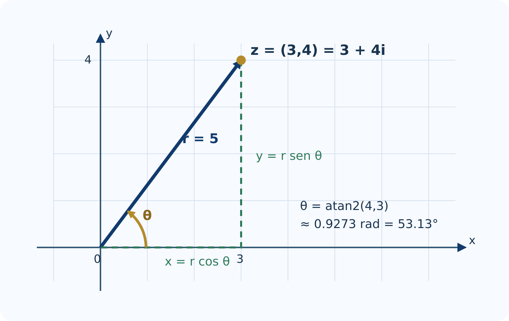
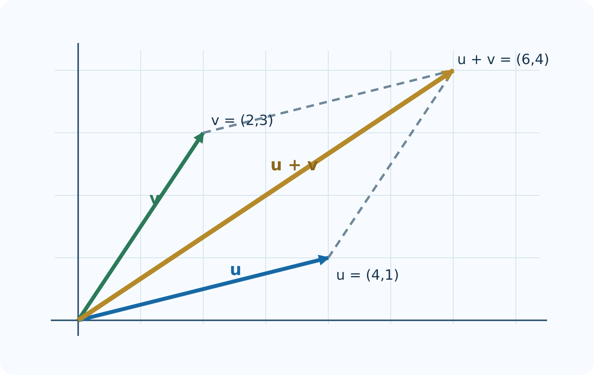

3 Números complejos
Introducción
Los números complejos unen álgebra y geometría. En forma cartesiana se operan mediante sus partes real e imaginaria; en forma polar, la multiplicación se convierte en una combinación de cambio de escala y rotación. R incorpora números complejos en su lenguaje base, por lo que permite experimentar sin instalar paquetes.
El capítulo sigue las nueve secciones de la Unidad 3 del programa oficial de Álgebra Superior de la Facultad de Ciencias de la UASLP (Universidad Autónoma de San Luis Potosí, Facultad de Ciencias 2011). Cada sección comienza con el procedimiento manual, lo traduce a R y termina con una interpretación geométrica.
Objetivos
Al terminar, el estudiante podrá:
- representar pares, vectores y complejos en el plano;
- convertir coordenadas cartesianas y polares;
- programar operaciones vectoriales con R base;
- utilizar Re(), Im(), Mod(), Arg() y Conj();
- interpretar sumas, productos, conjugados y cocientes;
- calcular potencias y todas las raíces de un complejo;
- comprobar resultados numéricamente sin confundir una prueba experimental con una demostración.
3.1 Definición de \(\mathbb R^2\)
Un elemento de \(\mathbb R^2\) es un par ordenado \((x,y)\). Puede representar un punto o el vector dirigido desde el origen hasta ese punto.
Situación inicial
Un robot se desplaza \(3\) unidades al este y \(4\) al norte. Su posición final es \((3,4)\) y la distancia al origen es
\[ \sqrt{3^2+4^2}=5. \]
En R, un vector de dos componentes puede guardarse como un vector numérico.
p <- c(x = 3, y = 4)
p
sqrt(sum(p^2))Para varios puntos conviene usar un data.frame.
puntos <- data.frame(
nombre = c("A", "B", "C", "D"),
x = c(3, -2, -3, 2),
y = c(4, 3, -2, -3)
)
puntos$cuadrante <- with(puntos, ifelse(
x > 0 & y > 0, "I",
ifelse(x < 0 & y > 0, "II",
ifelse(x < 0 & y < 0, "III", "IV"))
))
puntosPlano cartesiano en R
plot(puntos$x, puntos$y,
xlim = c(-5, 5), ylim = c(-5, 5), asp = 1,
xlab = "x", ylab = "y", pch = 19, col = "#1769a6",
main = "Puntos de R²")
abline(h = 0, v = 0, col = "gray65")
text(puntos$x, puntos$y, labels = puntos$nombre,
pos = 3, col = "#123b6d")Distancia entre dos puntos
distancia <- function(P, Q) sqrt(sum((P - Q)^2))
P <- c(-2, 3)
Q <- c(4, -1)
distancia(P, Q)El código reproduce la definición. P - Q obtiene las diferencias de componentes, ^2 calcula sus cuadrados, sum() los suma y sqrt() extrae la raíz.
3.2 Representaciones cartesiana y polar de vectores en \(\mathbb R^2\)
Para \((x,y)\neq(0,0)\):
\[ r=\sqrt{x^2+y^2},\qquad \theta=\operatorname{atan2}(y,x). \]
La función de dos argumentos atan2(y, x) identifica el cuadrante correcto. La función atan(y/x) no lo hace en todos los casos.

Conversión cartesiana a polar
cartesiana_polar <- function(x, y) {
r <- sqrt(x^2 + y^2)
theta <- ifelse(r == 0, NA_real_, atan2(y, x))
data.frame(x = x, y = y, r = r,
theta_rad = theta,
theta_grados = theta * 180 / pi)
}
cartesiana_polar(3, 4)
cartesiana_polar(-sqrt(3), 1)
cartesiana_polar(0, 0)Conversión polar a cartesiana
polar_cartesiana <- function(r, theta) {
if (any(r < 0)) stop("El radio debe ser no negativo")
data.frame(r = r, theta = theta,
x = r * cos(theta),
y = r * sin(theta))
}
polar_cartesiana(2, 5 * pi / 6)Construcción equivalente en GeoGebra
En la vista gráfica pueden escribirse las órdenes:
O = (0, 0)
Z = (3, 4)
u = Vector(O, Z)
r = Length(u)
theta = Angle((1, 0), u)Al arrastrar \(Z\), GeoGebra actualiza simultáneamente sus coordenadas, módulo y argumento.
Laboratorio web: coordenadas y argumento
3.3 Operaciones con vectores en \(\mathbb R^2\)
Sean \(\mathbf u=(u_1,u_2)\) y \(\mathbf v=(v_1,v_2)\). La suma, resta, multiplicación por escalar y producto punto se calculan componente a componente.
u <- c(2, 1)
v <- c(-1, 2)
list(
suma = u + v,
resta = u - v,
triple_u = 3 * u,
producto_punto = sum(u * v)
)Como sum(u * v) vale cero, los vectores son perpendiculares.
Regla del paralelogramo

dibujar_suma <- function(u, v) {
s <- u + v
limites_x <- range(c(0, u[1], v[1], s[1])) + c(-1, 1)
limites_y <- range(c(0, u[2], v[2], s[2])) + c(-1, 1)
plot(0, 0, type = "n", xlim = limites_x, ylim = limites_y,
asp = 1, xlab = "x", ylab = "y",
main = "Suma vectorial")
abline(h = 0, v = 0, col = "gray75")
arrows(0, 0, u[1], u[2], length = 0.09,
col = "#1769a6", lwd = 3)
arrows(0, 0, v[1], v[2], length = 0.09,
col = "#2c7a5a", lwd = 3)
arrows(0, 0, s[1], s[2], length = 0.09,
col = "#b58a2a", lwd = 3)
segments(u[1], u[2], s[1], s[2], lty = 2, col = "gray45")
segments(v[1], v[2], s[1], s[2], lty = 2, col = "gray45")
}
dibujar_suma(c(3, 1), c(1, 2))Verificación de propiedades
Los cálculos con punto flotante deben compararse con tolerancia.
iguales_vectores <- function(a, b, tol = 1e-12) {
length(a) == length(b) && all(abs(a - b) < tol)
}
w <- c(-2, 4)
lambda <- 2.5
c(
conmutativa = iguales_vectores(u + v, v + u),
asociativa = iguales_vectores((u + v) + w, u + (v + w)),
distributiva = iguales_vectores(lambda * (u + v),
lambda * u + lambda * v)
)3.4 Módulo y argumento
En el plano complejo se escribe
\[ |z|=\sqrt{x^2+y^2},\qquad \arg(z)=\theta. \]
R calcula estas cantidades con Mod() y Arg().
z <- 3 + 4i
c(modulo = Mod(z),
argumento_rad = Arg(z),
argumento_grados = Arg(z) * 180 / pi)Argumento principal y ángulos equivalentes
z_cuadrantes <- c(1 + 1i, -1 + 1i, -1 - 1i, 1 - 1i)
data.frame(
z = z_cuadrantes,
argumento_rad = Arg(z_cuadrantes),
argumento_grados = Arg(z_cuadrantes) * 180 / pi
)Arg() devuelve el argumento principal en el intervalo \((-\pi,\pi]\). A cada resultado se le puede sumar \(2k\pi\) sin cambiar el punto.
R devuelve Arg(0) = 0 por conveniencia computacional. Matemáticamente, el argumento de \(0\) no está definido porque el vector nulo no señala ninguna dirección. La función cartesiana_polar() registra este caso como NA.
Desigualdad triangular: experimento reproducible
set.seed(314)
z <- complex(real = runif(1000, -5, 5),
imaginary = runif(1000, -5, 5))
w <- complex(real = runif(1000, -5, 5),
imaginary = runif(1000, -5, 5))
holgura <- Mod(z) + Mod(w) - Mod(z + w)
summary(holgura)
all(holgura >= -1e-12)Mil casos correctos apoyan la propiedad y ayudan a detectar errores, pero no demuestran que sea verdadera para todos los complejos. La demostración general aparece en el volumen de Fundamentos Matemáticos.
3.5 Números imaginarios y complejos
R reconoce un literal complejo cuando aparece el sufijo i. Debe escribirse 1i, no solamente i, a menos que antes se haya creado un objeto con ese nombre.
z <- 3 + 4i
typeof(z)
c(
parte_real = Re(z),
parte_imaginaria = Im(z),
modulo = Mod(z),
argumento = Arg(z)
)Construcción desde componentes
z1 <- 3 + 4i
z2 <- complex(real = 3, imaginary = 4)
z3 <- as.complex(3) + 4i
c(z1 = z1, z2 = z2, z3 = z3)
identical(z1, z2)Vector de números complejos
zs <- c(2 + 1i, -1 + 3i, -2 - 2i, 3 - 1i)
tabla_z <- data.frame(
z = zs,
real = Re(zs),
imaginaria = Im(zs),
modulo = Mod(zs),
argumento = Arg(zs)
)
tabla_zPlano complejo en R
plot(Re(zs), Im(zs), asp = 1, pch = 19,
xlab = "Parte real", ylab = "Parte imaginaria",
col = "#1769a6", main = "Números complejos")
abline(h = 0, v = 0, col = "gray65")
text(Re(zs), Im(zs), labels = paste0("z", seq_along(zs)), pos = 3)3.6 Operaciones básicas con números complejos
Solución manual
Para \(z=3-2i\) y \(w=1+4i\):
\[ z+w=4+2i, \]
\[ zw=(3)(1)-(-2)(4)+\bigl((3)(4)+(-2)(1)\bigr)i=11+10i. \]
Comprobación en R
z <- 3 - 2i
w <- 1 + 4i
c(suma = z + w,
resta = z - w,
producto = z * w)Multiplicar significa rotar y escalar
resumen_producto <- function(z, w) {
producto <- z * w
data.frame(
cantidad = c("z", "w", "z*w"),
modulo = c(Mod(z), Mod(w), Mod(producto)),
argumento = c(Arg(z), Arg(w), Arg(producto))
)
}
resumen_producto(2 * exp(1i * pi / 6),
1.5 * exp(1i * pi / 3))La tabla permite comprobar
\[ |zw|=|z||w|, \qquad \arg(zw)\equiv\arg(z)+\arg(w)\pmod{2\pi}. \]
Laboratorio: producto como transformación
3.7 Complejo conjugado y sus propiedades
El conjugado de \(z=a+bi\) es \(\overline z=a-bi\). R lo calcula con Conj().

z <- 3 + 4i
c(
z = z,
conjugado = Conj(z),
producto = z * Conj(z),
modulo_cuadrado = Mod(z)^2
)Comprobaciones vectorizadas
z <- c(1 + 2i, -3 + 4i, 2 - 5i)
w <- c(2 - 1i, 1 + 3i, -4 + 2i)
c(
involucion = all(Conj(Conj(z)) == z),
suma = all(Conj(z + w) == Conj(z) + Conj(w)),
producto = all(Conj(z * w) == Conj(z) * Conj(w)),
modulo = all(abs(Mod(Conj(z)) - Mod(z)) < 1e-12)
)Recuperar las partes real e imaginaria
z <- -2 + 7i
c(
real_por_conjugado = (z + Conj(z)) / 2,
imaginaria_por_conjugado = (z - Conj(z)) / (2i)
)El segundo resultado es el número real \(7\), no \(7i\), porque la fórmula calcula \(\operatorname{Im}(z)\).
3.8 División de complejos
Procedimiento manual
\[ \frac{2+3i}{1-2i} =\frac{(2+3i)(1+2i)}{1^2+(-2)^2} =-\frac45+\frac75i. \]
Cálculo y verificación en R
z <- 2 + 3i
w <- 1 - 2i
cociente <- z / w
c(cociente = cociente,
comprobacion = cociente * w,
error = Mod(cociente * w - z))Programar la fórmula cartesiana
dividir_complejos <- function(z, w) {
if (any(Mod(w) == 0)) stop("No se puede dividir entre cero")
z * Conj(w) / Mod(w)^2
}
dividir_complejos(2 + 3i, 1 - 2i)Comparación polar
resumen_cociente <- function(z, w) {
q <- z / w
data.frame(
calculo = c("|z|/|w|", "|z/w|",
"Arg(z)-Arg(w)", "Arg(z/w)"),
valor = c(Mod(z) / Mod(w), Mod(q),
Arg(z) - Arg(w), Arg(q))
)
}
resumen_cociente(2 + 3i, 1 - 2i)Los dos argumentos pueden diferir en un múltiplo de \(2\pi\) y representar la misma dirección.
3.9 Potencias y raíces de complejos
Potencias con De Moivre
potencia_demoivre <- function(z, n) {
if (length(n) != 1L || !is.finite(n) || abs(n - round(n)) > sqrt(.Machine$double.eps)) {
stop("n debe ser un entero finito")
}
n <- as.integer(round(n))
if (z == 0 && n < 0) stop("Cero no admite exponentes negativos")
Mod(z)^n * exp(1i * n * Arg(z))
}
z <- 1 + 1i
c(R = z^8,
De_Moivre = potencia_demoivre(z, 8),
diferencia = Mod(z^8 - potencia_demoivre(z, 8)))R utiliza la identidad de Euler
\[ e^{i\theta}=\cos\theta+i\sin\theta. \]
Por eso r * exp(1i * theta) es una forma compacta de construir un complejo polar.
Todas las raíces \(n\)-ésimas
raices_n <- function(z, n) {
if (length(z) != 1L || length(n) != 1L || n < 1 || n != floor(n)) {
stop("Use un complejo y un entero positivo n")
}
if (z == 0) return(0 + 0i)
k <- 0:(n - 1)
Mod(z)^(1 / n) * exp(1i * (Arg(z) + 2 * pi * k) / n)
}
raices_cubicas <- raices_n(-8, 3)
raices_cubicas
raices_cubicas^3Raíces de la unidad
raices_unidad <- function(n) exp(2 * pi * 1i * (0:(n - 1)) / n)
omega <- raices_unidad(6)
round(omega, 10)
plot(Re(omega), Im(omega), asp = 1, pch = 19,
xlim = c(-1.25, 1.25), ylim = c(-1.25, 1.25),
xlab = "Parte real", ylab = "Parte imaginaria",
col = "#1769a6", main = "Raíces sextas de la unidad")
abline(h = 0, v = 0, col = "gray75")
segments(Re(omega), Im(omega),
Re(c(omega[-1], omega[1])), Im(c(omega[-1], omega[1])),
col = "#2c7a5a", lwd = 2)
text(Re(omega), Im(omega), labels = paste0("k=", 0:5), pos = 3)Laboratorio: raíces de la unidad
Laboratorio del capítulo
Trabaje en este orden:
- elija un punto en el laboratorio cartesiano-polar y anote \(x\), \(y\), \(r\) y \(\theta\);
- compruebe manualmente \(r=\sqrt{x^2+y^2}\);
- use el laboratorio de multiplicación para observar la suma de argumentos;
- reproduzca el mismo ejemplo con R;
- cambie \(n\) en el laboratorio de raíces y describa el polígono obtenido;
- compruebe en R que cada punto elevado a \(n\) produce \(1\) dentro de la tolerancia numérica.
Ejercicios con R
- Escriba una función que reciba dos puntos de \(\mathbb R^2\) y devuelva distancia y punto medio.
- Genere veinte vectores aleatorios y conviértalos a forma polar.
- Compare atan(Im(z)/Re(z)) con Arg(z) en los cuatro cuadrantes y explique las diferencias.
- Escriba una función que clasifique un complejo como real, imaginario puro o complejo general.
- Compruebe experimentalmente \(|zw|=|z||w|\) con mil pares aleatorios.
- Represente \(z,\overline z,-z\) y \(1/z\) para un mismo complejo no nulo.
- Calcule \((1-i)^{20}\) directamente y mediante potencia_demoivre().
- Obtenga las raíces quintas de \(-32\) y verifique el residuo máximo \(\max_k|w_k^5+32|\).
- Dibuje las raíces de la unidad para \(n=3,4,5,8,12\) en cinco paneles.
- Modifique el gráfico de raíces para mostrar también los argumentos en grados.
Proyecto integrador
Explorador de transformaciones complejas. Desarrolle un script en R base que:
- reciba un conjunto de puntos complejos;
- aplique \(T(z)=az+b\) con parámetros elegidos por el usuario;
- muestre los puntos originales y transformados en la misma escala;
- separe el efecto de \(az\) en rotación y cambio de escala;
- interprete el efecto de la traslación \(b\);
- incluya al menos una figura formada por los vértices de un polígono;
- compruebe numéricamente dos propiedades del módulo o del conjugado;
- entregue código, gráfica, explicación matemática y conclusiones.
Síntesis
- Un par de \(\mathbb R^2\) se almacena como vector; una colección, como tabla.
- atan2(y, x) y Arg(z) resuelven correctamente el cuadrante.
- R representa complejos con el tipo complex y el literal 1i.
- Re(), Im(), Mod(), Arg() y Conj() traducen directamente las definiciones.
- La suma es vectorial; el producto combina escala y rotación.
- El conjugado permite dividir y visualizar una reflexión.
- exp(1i * theta) simplifica la forma polar, De Moivre y las raíces.
- Las comparaciones numéricas deben usar tolerancia.
Materiales complementarios del capítulo
Video del capítulo
El enlace al video se incorporará cuando esté disponible.
| Material | Descripción | Acceso |
|---|---|---|
| Presentación en PDF | Diapositivas del capítulo para consulta y exposición. | Enlace pendiente |
| Presentación editable | Diapositivas en formato PowerPoint. | Enlace pendiente |
| Infografía | Síntesis visual de los conceptos principales. | Enlace pendiente |
| Cuaderno de Google Colab | Cuaderno práctico en R sobre números complejos, forma polar y raíces. | Abrir en Google Colab |
Referencias del capítulo
La organización matemática sigue Universidad Autónoma de San Luis Potosí, Facultad de Ciencias (2011) y Silva y Lazo (2007). La interpretación geométrica se apoya en Brown y Churchill (2014) y Needham (1997). Las funciones y la sintaxis computacional corresponden a R base (R Core Team 2026).